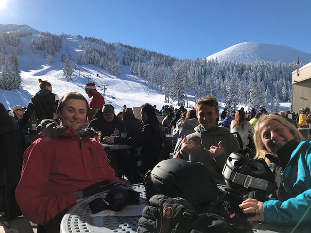
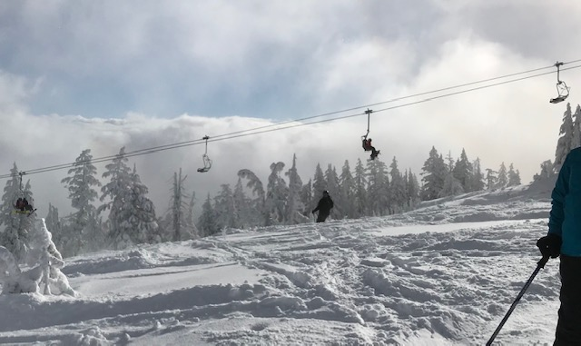

Skiing Pics
A very small sampling of some stellar days on Mt. Bachelor. Soooooo many pow days!

Summit - only open on blue-bird days and absolutely unbeatable on a pow day!
Pine Marten Express - Great for warm up runs on fresh snow days. Not too steep, so even just a couple inches feels like a great powder day!

NW Express - opens up some nice advanced terrain with a ton of vertical. The place to be on those deep days
The Cone - it's about a 20 minute hike which filters out most skiers...typically still has great snow a couple days after a dump - always worth the effort..
Becky caught Lynd and me skiing off the cone from the deck
Tree Skiing on Cloud Chaser is fantastic!
Thanks to Tyler for some of these pics, to Becky for the cone video and to Lynd for the tree-skiing video!